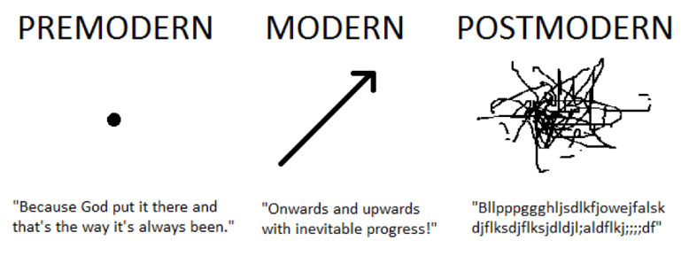
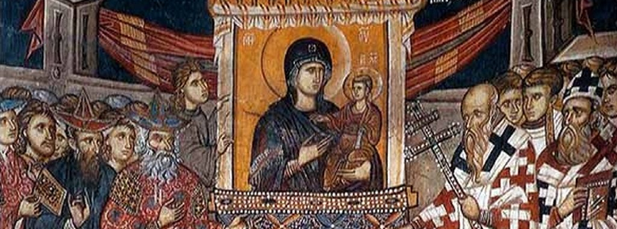
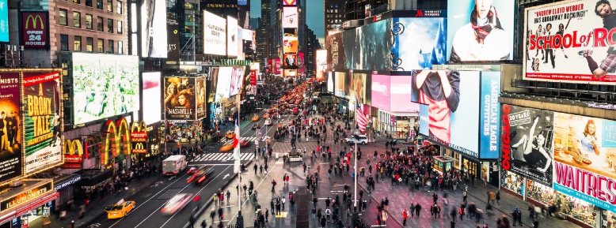

Beyond modernism
Our contemporary historical time is marked by growing crises and challenges, which question our sense of the world that surrounds us and of which we are part of. These crises are having very problematic negative impacts, such as the climatic-environmental one, epidemiological pandemics, warlike scenarios, social polarization and internal conflicts, psychological illness on the rise, power and of resource distribution inequalities, rapid technological impacts, and many other multidimensional parallel processes that challenge us as an ecosystem, as a species, as societies, and as people.
Crisis scenarios are not new: they have been part of history throughout the centuries, with repercussions that have partially or totally devastated societies on multiple occasions. What marks us today is not so much the presence or absence of various crises and big challenges, but the way we see them and how we deal with the events that come with them. Going through these past crises, through experience -and a lot of good and bad luck-, we have developed various ways of understanding the events and processes of our historical becoming, as well as on occasions multiple ways of organizing and re-organizing ourselves socially, which in one way or another respond to particular historical periods that framed the bases on how we understand the world, and how, consequently, we should act on it.
To respond to these new challenges that we face, and to take advantage of the possible new opportunities that we have, we need to understand -at least partially- where we came from, where we are, and where we can go. Consequently, it is necessary to develop new ideas and principles of action that adapt to these new times and leave aside those old paradigms that have clearly been –and will be– insufficient to function properly today and in the future. Those paradigms of the past are exhausted: both descriptively, to explain the present, and also normatively, to provide answers to the future. For this reason, the great historical paradigms-projects of the past, referring to pre-modernism, modernism and consequently postmodernism have become somehow insufficient -or even obsolete- successively, forcing us to embrace post-postmodernism projects that can fit into this present time of "the end of the end of history", that respect and integrate the good of the previous paradigms and overcome what is not useful; possibly, thus leading us to a new historical-temporal sensibility.
These historical and axiological macro-categories -these great “isms”- mentioned above denote generalized temporal senses, feelings and sensitivities, since each of them encompasses different cognitive, explanatory and sociocultural frameworks, which are anchored as expanded pints of references that prevail in societies in certain historical times. They, in one way or another, structure generalized frameworks of concepts, preferences, belongings, and guidelines for sociopolitical action.
| pre-modern | modern | post-modern | meta-modern |
|---|---|---|---|
| macro-order | linear | non-order | non-linear |
| utter destiny | utopia | eutopia | protopia |
| adequacy | centralization | decentralization | integration |
In this way, here we consider the need to briefly review these diverse historical macro-paradigms, in order to then try to explore certain guidelines of possible new post-postmodern projects -which come after postmodernity- anchored in a new presumed temporality that is emerging as many says.
Pre-modernityIn the pre-modern vision of history, events are seen as something natural and irreversible: either something that came from the gods, characteristic of the theocentric conceptions, or as something part of nature and the order of the universe, characteristic of animism or the chronocentric, cosmocentric and cyclical views of history.
With the glasses of pre-modernity, nothing could be done in the face of crises and nothing would improve the situation of future generations: everything that happened was anchored in factors of a higher order; and therefore, social actions or responses and opportunities of change did not make sense in terms of the autonomy to decide over -or create- the future, because the becoming of history was part of an utter destiny.
In general, this way of seeing history and the values that it entails have been abandoned or attenuated in most contemporary societies, mainly because of the impact of the multiple processes of modernization of thinking and social re-organization that we have been passing through in recent in times. Nevertheless, pre-modern thinking still persists and grow in many places, examples of this can be the solid theocentric monarchies in some regions, the active appeal for a return to past orders, the strengthening of conservatism in western societies, the reference to ethnic-nationalism as an organizational basis for society, or the calls for return to a state of nature-primitivity characteristic of hunter-gatherers times as a way to overcome the current crises.
Going back to these orders from the distant past, by which we have lived a great part of our history on this planet, clearly cannot be reliable references of how the world works, or much less respond to the great challenges we face today as a global civilization; this does not mean taking away from taking into account and reincorporating some of the many positive things that can be learned from these pre-modern paradigms, which modernity perhaps abruptly and erroneously decided to leave aside.
The modern projectLater, with the becoming of modernity, and of the subsequent anthropocentrism and technocentrism that it entailed, we began to see crises and calamities as things and situations avoidable by human action, or even as intermediate historical processes of something that was necessarily going towards a better world, and where the opportunities to improve were an autonomous-conscious decision to follow; especially through the use and implementation of scientific knowledge, technology, rationality, industrialization, ethical-moral universalism, the ideas of development, among many other bases, which caused a strong intergenerational optimism towards a supposed cuasi-utopian future of presumed generalized abundance and peace; concepts and frames of reference shared in a certain way by all modern political projects of a different nature.
Modern ideologies of social order have been various and very preponderant, such as the first variants of liberalism, socialism, capitalism, democracy, civic nationalism and patriotism, or the new developments related to eco-modernism, among many others which, in a certain way, still coexist with us.
But especially in the last hundred years, the modern and optimistic vision of seeing history and responding to the crisis began to deteriorate. Especially, due to the various war calamities, industrial genocides, economic crises of great magnitude, a growing environmental-ecosystemic devastation, violence and systematic exploitation of populations and regions, the strong concentration of power and resources in small elites, among many other dynamics that were framed as a strong questioning of the different processes and concepts of modernity.
Despite many positive things about modernity, such as scientific medicine, the massification of transportation and basic consumption-goods, information technologies, industrial automation, the idea of human rights or political participation, among so many other modern products; modernism is not presented as a completed paradigm to follow either, since added -and consequent- to some theoretical inconsistencies of it, has also brought many negative consequences due technological over-optimism, the overtrust of human capacities and good-intentions, or the use of rational-orders designed to reinforce, hide and normalize asymmetries and highly unjust power hierarchies and situations.
The post-modern projectFaced with the decline of modernity, postmodernity begins to emerge by the influence of the diverse postmodern projects, especially in regions with a western matrix, which manifested itself in various deployments dedicated not only to pointing out the crises and devastation attributed to modernism, but also aimed to question and deconstruct the basic pillars that sustained this modernity; among them, anthropocentrism, the objectivity and neutrality of knowledge, technological optimism, developmentalism, historical linearity and many others references to which the modern project refers.
With its upswing, the postmodern project began to propose new bases for seeing history and questioning the prevailing modern ways of organizing society. It promoted bases opposed to the modern project, such as a critique of the great historical projects, relativism, perspectivism, subjectivism, existentialism, atomistic-pluralism, ethical-moral nihilism, language-centrism, indeterminism and a generalized pessimism, among many other perspectives. With this view, history and crises are interpreted as part of the existence of the "subject", understanding that nothing can be done about them, since the notion of historical future is diluted in the “nothingness” itself, because the very concept of prosperity and progress doesn't even make sense. Thus, historical challenges are something unintelligible, inevitable, meaningless, and anchored in a perpetual struggle for power, without any end or direction; giving rise to an ahistorical, isolated and timeless historical subject.
The postmodern ideology permeated different social structures, for example in the conversion of an industrial-centralist capitalism anchored in the notion of historical progress, towards a market-centric post-political commodificatied configuration of isolated consumer-agents immersed in a timeless presentism. Or also, the strong emergence of new types of “left movements” over-engaged in an endless emphasis on micropower analyzes and struggles; that have only the active pursuit of fragmentation, decentralization, distribution, and dismantling of all existing and possible macro-socio-organizational structures, with the aim of reaching a kind of eutopia -the "good place"- based on plural-atomized agents that return to small-scale counter-cultural community places, which according to this vision have been marginalized and excluded by modernity.
In itself, despite its impact, postmodernism was –and still is– not so much a concrete sociopolitical project -as modernism was-, but rather a counter-modern reactive movement, a critical discourse and an epistemological conception that questions the parameters that precede it; besides having permeated some social structures in one way or another, it never became concrete strong movement neither, and much less coming to propose a proper idea of a better future for society respectively. So, beyond learning from it the need to have a continuous attitude of active criticism of the social and cognitive orders established -and to be established-, the postmodern project is clearly not a paradigm of reference that can rethink the present and build-up the future around the enormous challenges that we face as a civilization; since it denies the very possibility of creating macro-social changes towards proper better and more anti-fragile model of social organization.
After postmodernismNowadays, in parallel to the multiple socioeconomic, geopolitical and environmental-ecosystemic crises that confront us, in some way it can be noticed that there is the emergence of a new feeling and historical sensitivity that goes beyond pre-modernism, modernism and the postmodernism; which to a greater or lesser extent is expanding in the different regions of the planet impacted by the strong present globalization.
This presumed new feeling-sensitivity is framed in a time marked by the "end of the end of history": it is apparently presented as a possible synthesis -or integration- of the various previous frameworks and references. Thus, this new apparent proto-time, recovers the notion of temporality and future, anchored in a coexistence of a sense of rejection towards great stories and pessimism, with the capacity -and need- of commitment to change and hope; noticing that the future can be better through the incorporation and innovation of new learnings and responses, framed in the application of novel epistemological, technological, and sociocultural developments.
Possible early and incipient expressions of this new historical sensitivity could be the appearance of social phenomena such as the new environmental movement and personalities such as Greta Thunberg, some alter-globalization projects, or certain new post-party-centric political movements that cannot be classified as typically mdoern or postmodern.
Although it is difficult to grasp something that is just in its initial stages, many authors have begun to refer to it by appealing to certain new labels, and consequently, trying to characterize certain qualities and dimensions of these new post-postmodern expressions. Among these emerging conceptualizations, has become widely known the concept of meta-modernism (Vermeulen, & Van der Akker, 2010; Van den Akker, Gibbons, & Vermeulen, 2017), defined as a “structure of feeling” and an open cultural logic that emerges, reacts, and oscillates between modern engagement and postmodern disenchantment-detachment, both as a synthesis, integration and overcoming of the two; and that it comes in the form of “informed naivety” and/or “pragmatic-idealism”, situated in response to the recent events and challenges of climate, economic, technological, and political crises.
Here, for practical terms of encompassing different ideas and conceptualizations, it is considered appropriate to use the label of post-postmodernism, or simply what "comes after" postmodernism; and therefore, also after modernism and premodernism. Being an intentionally vague and open terminology, concretely marks a temporal and conceptual break with previous periods and, consequently, leaves open the possibility of new interpretations and developments.
This period, possibly framed in new emerging projects, invites us to overcome postmodernity by thinking back to the notion of the future, not from a linear and mechanistic perspective of temporality –as modernism invited–, but from an open vision, based on complex and critical thinking, engaging in deconstruction, and oriented towards the search of a protopia referred to the search for persistent and continuous social-personal improvements anchored in a non-linear, never-ending, post-utopian, and not-guaranteed historical progress. In other words, this period that opens is one of construction -or reconstruction-, which comes later and through deconstruction and integration; thus synthesizing the coexistence and incorporation of categories previously -and erroneously- understood as contradictory, such as order and chaos, organization and fragmentation, science and art, the natural and the artificial, between the spiritual and the material, knowledge and uncertainty, between the local and the global, centralization and decentralization, humility and greatness, or between the past, present and the future.
In turn, more from a sociological perspective, referring to the new sociopolitical movements and developments, post-postmodernity will probably put an end to the old movementists historical-ontologies, macro-ideologies, the organizational models of the past and present, and the current geopolitical scheme-order that is already deteriorated; as well as the overcoming of the anti-organizational and fragmentary attitude of the postmodern project. By this, perhaps giving rise to new approaches such as informed plurality, transectionality, transubjectivity, integrative-integral thinking, perspectives of complexity, and an endless number of new developments and products of socio-environmental studies-sciences that we have yet to see.
Although it is difficult to know in advance how this new temporality and value framework will unfold concretely, at least the present invites us to rethink and re-represent ourselves –both personally and collectively–, between and beyond pre-modern, modern and postmodern projects and paradigms. Trying to elucidate –and choose– what is our place today and tomorrow in history, and consequently, start to dream again with the understanding of our limitations and the dangers that progress entails. Perhaps these new post-postmodern paradigms and developments will help us to navigate and overcome these great crises and challenges that we are going through as an ecosystem, as a species, as a civilization, and as persons.